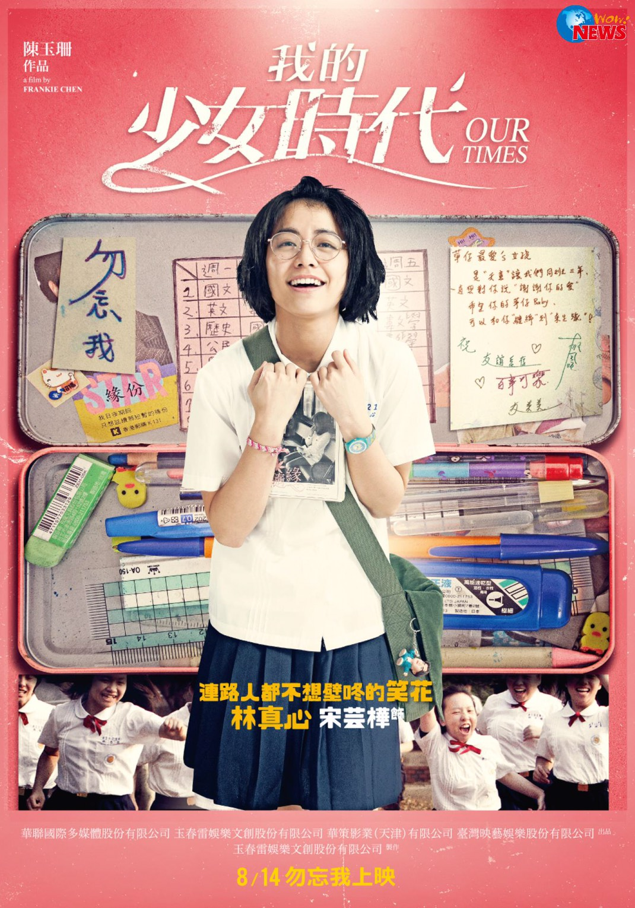
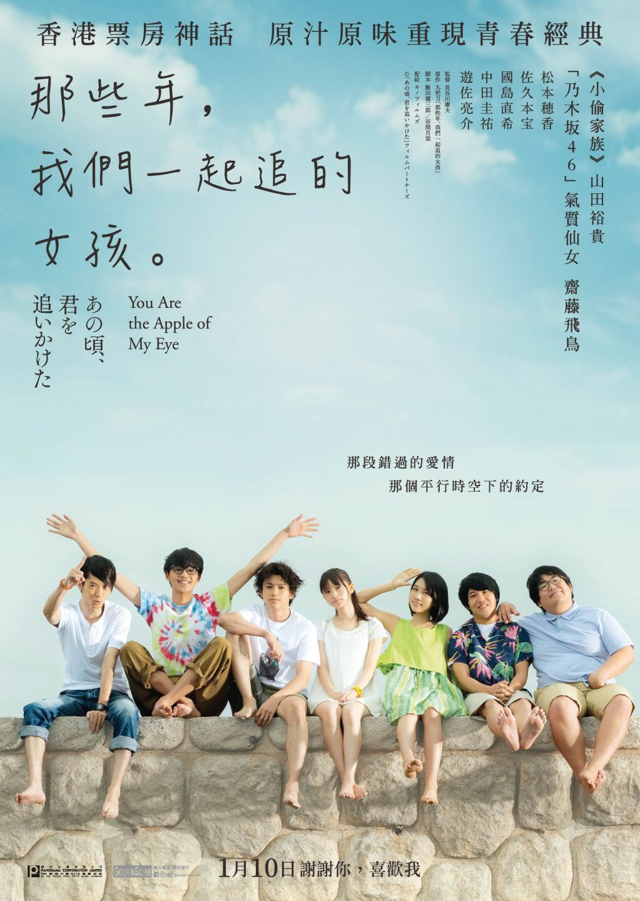
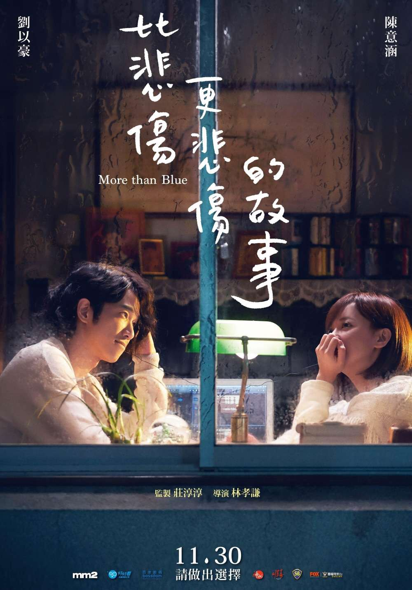

|  | 《我的少女時代》（英語：Our Times） 由陳玉珊初次執導，宋芸樺、王大陸、李玉璽、簡廷芮領銜主演， 以1990年代為背景，校園愛情、青春懷舊為題材的2015愛情輕喜劇電影。 有別於2011年度紅極一時的《那些年，我們一起追的女孩》， 本片劇情走向是以女性觀點出發作為其主要視角，並非真人真事。 |
|---|
| 《那些年，我們一起追的女孩》（英語：You Are the Apple of My Eye） 是一部於2011年上映的臺灣青春愛情片，劇情改編自臺灣作家九把刀撰寫的半自傳同名小說 這部片也是九把刀首次執導的電影作品，並由監製/柴智屏、崔震東，製片/童思玫， 配樂/薛忠銘、侯志堅，數位行銷/張家軒Coco，攝影/周宜賢...等 專業團隊聯手製作。 |
 |
|---|
|  | 《比悲傷更悲傷的故事》（英語：More Than Blue） 是一部2018年臺灣愛情電影，翻拍自2009年南韓電影《最悲傷的故事》， 導演為林孝謙，並以擅長詩意光影的香港攝影師關本良擔任攝影指導。 2018年1月4日開鏡。由劉以豪、陳意涵、張書豪、陳庭妮領銜主演，本劇入選第23屆釜山國際影展， 在影展舉行世界首映。獲中華民國文化部「107年度第1梯次國產電影長片輔導金」新臺幣700萬元。 |
|---|